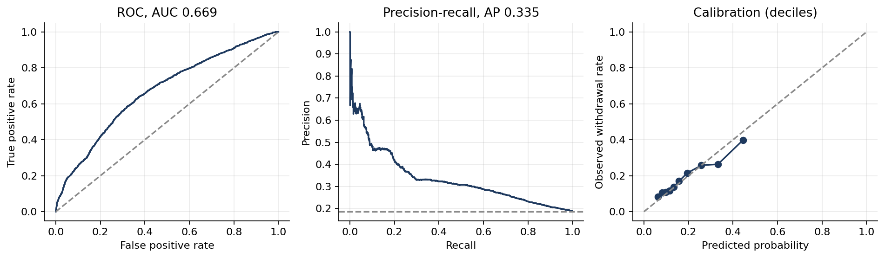

Projects / Student withdrawal early warning
Complete · numbers checked 2026-10-08Flagged on day 28, the top 10% of students withdraw at 39.9% against 18.6% overall
Using only what a tutor could see in the first 28 days, the model flags students who then withdraw at 39.9%, 2.1 times the 18.6% base rate, a median of 61.5 days before they leave. Its ROC-AUC is a modest 0.669. The first version reported 0.895, and most of that was leakage.
- Students
- 28,785
- Enrolments
- 32,593
- Test enrolments, later term
- 9,127
- Median warning
- 61.5 days
01The question
Which students will withdraw from an online module, and how early can a university know, in time to help?
02The data
The Open University Learning Analytics Dataset (Kuzilek, Hlosta and Zdrahal 2017, CC BY 4.0): 32,593 enrolments held by 28,785 students in 22 presentations of 7 modules, with over 10 million rows of daily clicks.
03The method
The model sees only what is known by day 28, and it is tested on a later term, so it is never scored on information from the future. The 10% of students it ranks highest withdraw at 39.9% against an 18.6% base rate.
A simple rule also stands out: of 27,782 enrolments still registered at their first deadline, the 8,951 who missed it withdrew at 31.8% against 13.4% of those who did not.

04What this does not show
- One university, 2013 and 2014, and one test cohort.
- A ROC-AUC of 0.669 (interval 0.654 to 0.684) is modest: the model ranks, it does not predict individuals.
- Reasons for leaving are not recorded, and OULAD does not say when marks were returned, so scores are treated as known on submission.
- Nothing here measures whether an intervention works, only whom it should reach first.
05What the audit changed
The first version reported a ROC-AUC of 0.895. About 59% of its lift came from leakage: its features were computed over whole courses (assessments submitted, average submission day), so students who left early looked different by construction. It also grouped assessment features by student rather than by enrolment, and split rows at random, which put 1,121 students in both training and test. Those results are retired; the numbers on this page come from the rebuilt version.
06Reproduce it
python -m venv .venv && .venv/bin/pip install -r requirements.txt .venv/bin/python scripts/get_data.py # fetches the 454 MB click log cd notebooks && ../.venv/bin/jupyter nbconvert --to notebook --execute --inplace early_warning.ipynb
Source and code: repository. Data: Open University Learning Analytics Dataset (CC BY 4.0).